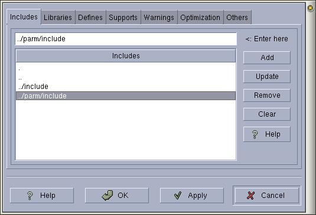

|
|
Anjuta Manual version 0.1Copyright (c) Kh. Naba Kumar Singh |
| Contents(Top) | Index | Shortcuts |
| PREV: Setting Compiler Options | UP: Setting Compiler Options | NEXT: Specifying library paths |
Enter all the paths one by one and press the Add button for each entry.
To remove an entry, select the entry in the list and click Remove.
To edit an entry, select the entry, modify it in the entry box and click Update.
To clear all the entries, click Clear.

Things to note:
Note that if the settings are for a project then all the includes path should be relative to the source directory of the project. There should not be any absolute path. Otherwise when you distribute the program, people trying to build your program will find difficulties.
If the settings are for the 'no-project', then it doesn't matter if the paths are absolute or relative (since the settings are local to your machine only and it wouldn't go anywhere).